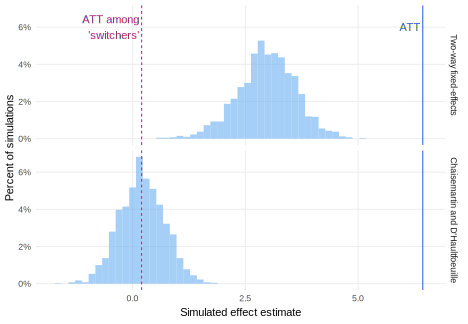
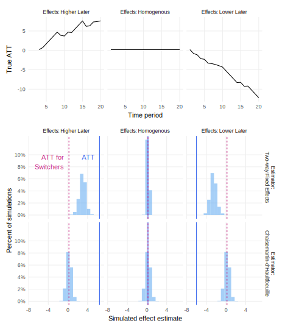

library(rdddr) # for helper functions
library(DIDmultiplegt)
N_units <- 20
N_time_periods <- 20
declaration_16.3 <-
declare_model(
units = add_level(
N = N_units,
U_unit = rnorm(N),
D_unit = if_else(U_unit > median(U_unit), 1, 0),
D_time = sample(1:N_time_periods, N, replace = TRUE)
),
periods = add_level(
N = N_time_periods,
U_time = rnorm(N),
nest = FALSE
),
unit_period = cross_levels(
by = join_using(units, periods),
U = rnorm(N),
potential_outcomes(Y ~ U + U_unit + U_time +
D * (0.2 - 1 * (D_time - as.numeric(periods))),
conditions = list(D = c(0, 1))),
D = if_else(D_unit == 1 & as.numeric(periods) >= D_time, 1, 0),
D_lag = lag_by_group(D, groups = units, n = 1, order_by = periods)
)
) +
declare_inquiry(
ATT = mean(Y_D_1 - Y_D_0),
subset = D == 1
) +
declare_inquiry(
ATT_switchers = mean(Y_D_1 - Y_D_0),
subset = D == 1 & D_lag == 0 & !is.na(D_lag)
) +
declare_measurement(Y = reveal_outcomes(Y ~ D)) +
declare_estimator(
Y ~ D, fixed_effects = ~ units + periods,
.method = lm_robust,
inquiry = c("ATT", "ATT_switchers"),
label = "twoway-fe"
) +
declare_estimator(
Y = "Y",
G = "units",
T = "periods",
D = "D",
handler = label_estimator(did_multiplegt_tidy),
inquiry = c("ATT", "ATT_switchers"),
label = "chaisemartin"
) Difference-in-differences
We declare a differences-in-differences design in which the effect of a treatment is assessed by comparing changes over time for a unit that gets treated to changes over time in the same period for a unit the does not get treated. The declaration and diagnosis helps clarify when effect heterogeneity threatens causal inferences drawn from this design.
The difference-in-differences design compares the pre-to-post-treatment difference in treated units to that of untreated units. We use the over-time change in the untreated units to account for the changes over time in the treated units that are not due to the treatment. Suppose outcomes were rising over time for all units but we only looked at the pre-to-post difference in the treatment group. We might falsely infer the treatment increased outcomes. The logic of the difference-in-differences design is that we can subtract off the trends affecting all units in order to adjust our causal effect estimates.
The difference-in-differences design relies on a strong assumption in \(M\): the parallel trends assumption. This assumption asserts that the changes (not the levels) in untreated potential outcomes are the same for treated and untreated units. Because this assumption depends on the values of the unrealized (and thus unobservable) control potential outcomes in the treated units after treatment, it cannot be tested. A widely-used diagnostic is to look at the trends in outcomes between the treated and control unit before treatment; this is only an indirect test because the parallel trends assumption concerns the unobserved control trend of the actually treated unit.
The design has been famously used for analyses of two periods (before and after) and two groups (treated and untreated) such as a policy change in one state compared to another before and after the policy change. Today, difference-in-differences is most often used in many-period many-group settings with observational panel data. Here, the logic of the two-period two-group design is extended through analogy. Parallel trends between treated and control groups are assumed on average across treated groups and periods. Unfortunately, the analogy holds only under limited circumstances, a fact only recently discovered.
Declaration ?def-declarationch16dec3 describes a 20-period, 20-unit design in which eventually-treated units become treated at different times, a common setting in empirical social science often referred to as the staggered adoption design. The treatment effect of interest might be a state-level policy adopted in 20 states at some point within a 20-year period, so we draw on comparisons before and after policy adoption within states and comparisons across states that have and have not yet adopted treatment. We use the did_multiplegt_tidy function (available in the rdddr companion package) to prepare the output from the DIDmultiplegt package that implements the estimation procedure.
Difference-in-differences design
We define hierarchical data with time periods nested within groups, such that each of the 20 units have 20 time periods from 1 to 20. We assign units to be treated at some point in the period (D_unit), and confound treatment assignment with unobservable unit-specific features U_unit. (If there were no confounding, we would not need the parallel pretrends assumption.) In addition, the timing of treatment is randomly assigned (D_time). The assignment D then is jointly determined by whether the unit is treated and whether the current period is after the assigned D_time. We allow for unit-specific variation U_unit and time-specific variation U_time that affects the outcome as well as unit-period characteristics U. Potential outcomes are a function of these unit-, time-, and unit-time-specific characteristics, and a treatment effect that varies according to when units are treated (more on the importance of this treatment effect heterogeneity below).
The difference-in-difference design typically targets the average treatment effect on the treated (ATT) inquiry. We leverage over time comparisons within units to isolate the causal effect of treatment, and difference out time-varying characteristics by subtracting off the change in untreated units. Unfortunately, except under extremely limited circumstances — exactly homogeneous treatment effects — we will not be able to recover unbiased estimates of the ATT. We can, however, under some circumstances and with some estimators, recover the ATT for a specific subgroup: units in those periods that just switched from untreated to treated. We declare the ATT for these “switchers” as the inquiry.
So many answer strategies have been proposed in recent years to address bias in the difference-in-differences design that we cannot summarize them in this short entry. Instead, we illustrate how to assess the properties of two particular estimators under a range of conditions. First, we define the standard two-way fixed effects estimator with fixed effects by time and unit. The two-way fixed effects fits the empirical goal of difference-in-differences: the time fixed effects net out time-varying unit-invariant variables such as seasonality and time trends. The unit fixed effects net out unit-varying variables that are time-invariant like race or age-at-birth of individuals and long-term histories of violence of territories. However, the two-way fixed effects estimator relies on comparisons between units that are treated and units that are not yet treated. When treatment effects differ across units depending on when they are treated (as they do in the design here), then those comparisons will be biased: part of the treatment effect will be subtracted out of the estimate. Our second estimator, proposed by Chaisemartin and d’Haultfoeuille (2020), addresses this problem when estimating the ATT among switchers.
Difference-in-Differences diagnosis
diagnosis_16.3 <- diagnose_design(declaration_16.3)
Figure Figure -1.1 shows that the two-way fixed effects estimator is biased for both the ATT and the ATT on the switchers. By contrast, the Chaisemartin and d’Haultfoeuille (2020) estimator is unbiased for the ATT on the switchers. Neither estimator recovers unbiased estimates of the ATT. The next section explains why.
Redesigning over alternative models of treatment effect heterogeneity
The issues with the two-way fixed effects estimator emerge when treatment effects differ for units that are treated later versus earlier. Following Principle ?exm-designagnostically: Design agnostically, we declare a model with homogeneous treatment effects, as well as two kinds of time-varying heterogeneous treatment effects: one in which effects are lower for units treated later and one in which effects are higher for units treated later.
The timing of treatment, nature of heterogeneous effects, and answer strategies interact to determine the properties of the design. Figure Figure -1.2 shows the diagnosis under all three sets of potential outcomes, and examines both the ATT and the ATT for switchers inquiries. We consider both the two-way fixed effects estimator and the Chaisemartin and d’Haultfoeuille (2020) estimator.
When treatment effects happen to be homogeneous (middle panel), both estimators recover unbiased estimates of both the ATT and the ATT for switchers, which of course are equal to one another because of treatment effect homogeneity. However, when treatment effects vary with the timing of treatment (left or right panels), the two-way fixed-effects estimator is biased for both inquiries. The Chaisemartin and d’Haultfoeuille (2020) estimator is also biased for the ATT, but remains unbiased for the ATT among switchers regardless of the pattern of treatment effect heterogeneity.

Design examples
Paglayan (2019) uses a difference-in-differences design to estimate the causal effect of collective bargaining rights for teachers on education spending in the American states.
Carreri and Dube (2017) uses a difference-in-differences design to estimate the effect of changes in the international price of oil on the election of right-wing politicians in oil-dependent countries.